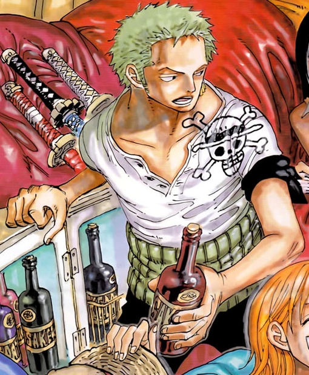
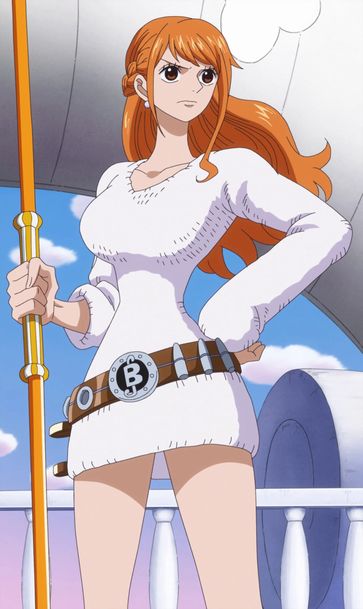

Personajes
-
Monkey D. Luffy

Monkey D. Luffy, más conocido como Luffy «Sombrero de Paja», es el protagonista principal de la serie de manga y anime One Piece. Es el capitán y fundador de los Piratas de Sombrero de Paja así como un de los Cuatro Emperadores que gobiernan los mares del Nuevo Mundo. Comió una fruta del diablo llamada fruta Gomu Gomu, que le convirtió en un hombre de goma. Además de esto, posee varias habilidades que le hacen ser un pirata más que especial; un gran ejemplo de ello es la capacidad de usar el haki del conquistador ―que sólo lo posee una persona dentro de un millón― y poseer también los otros dos tipos de haki.
Luffy pertenece a una familia plagada de personajes conocidos mundialmente: es hijo del líder del Ejército Revolucionario y criminal más buscado del mundo, Monkey D. Dragon; nieto del héroe de la Marine y anterior vicealmirante Monkey D. Garp, hermano adoptivo del conocido pirata Ace "Puño de Fuego", así como del oficial general del Ejército Revolucionario, Sabo. Su objetivo en la vida es convertirse en el próximo Rey de los Piratas, encontrar el legendario tesoro conocido como el "One Piece", que perteneció al anterior Rey de los Piratas Gol D. Roger, y conquistar el Nuevo Mundo liderando una tripulación formada por grandes piratas.
Como fundador y capitán de los Piratas de Sombrero de Paja, es el primer miembro que compone la tripulación, así como uno de sus tres principales combatientes. Luffy fue uno de los once piratas novatos conocidos como los los Once Supernovas junto al espadachín de su tripulación Roronoa Zoro y, con ello, uno de los once piratas con una recompensa superior a 100.000.000. Posteriormente su recompensa subió a 1.500.000.000 tras los hechos acaecidos en Whole Cake Island y actualmente cuenta con una recompensa de 3.000.000.000 como consecuencia de todos los acontecimientos acaecidos en el Asalto a Onigashima.
Luffy se ha ganado una enorme reputación en todo el mundo por causar problemas incluso entre los Siete Guerreros del Mar y la Marine, cometiendo crímenes y acciones que se consideran amenazadoras contra el Gobierno Mundial.
También es especialmente conocido por su conducta irresponsable e impulsiva, así como por tomar decisiones que normalmente son consideradas verdaderas locuras; siendo un gran ejemplo el incidente causado en Enies Lobby, la infiltración y fuga de la prisión de Impel Down, y su participación en la Batalla de Marineford. Es, por lo tanto, famoso no sólo por ser el único pirata en asaltar las tres instalaciones más importantes del gobierno, sino también de huir de todas ellas sin que su tripulación sufriera ninguna baja y causando grandes daños a su paso (especialmente en Enies Lobby).
Todo lo anterior, sumado al hecho de que arremetió contra un Noble Mundial, golpeándole aún con pleno conocimiento de las consecuencias debido a la posición sagrada que concede el Gobierno Mundial a los nobles, ha causado que Luffy sea etiquetado por la Marine como la clase de pirata que causaría graves problemas en un futuro próximo.
-
Roronoa Zoro
Roronoa Zoro, conocido como El Cazador de Piratas, es el combatiente de los Piratas de Sombrero de Paja, y uno de sus dos espadachines, así como un antiguo cazarrecompensas.
Fue el primer miembro en unirse a la tripulación, y es considerado parte del Trío Monstruoso junto a Luffy y Sanji. Su sueño es convertirse en el mejor espadachín del mundo. Zoro también es considerado uno de los Once Supernovas que forman parte de «la peor generación», ya que llegó al Archipiélago Sabaody con 120.000.000 de recompensa.
Actualmente posee una recompensa de 320.000.000, siendo la cuarta más alta de la tripulación, después de las de Luffy, Jinbe y Sanji.
-
Usopp
Usopp es el francotirador de los Piratas de Sombrero de Paja. Es el cuarto miembro de la tripulación y el tercero en unirse oficialmente. A pesar de abandonar la banda en el arco de Water 7, se volvió a unir en el arco del regreso a Water 7.
Es proveniente de la Villa Syrup en el East Blue. Ahí ejerció como capitán de los Piratas de Usopp, pero tras los eventos del arco de Villa Syrup, se unió a los Sombrero de Paja. Su sueño es convertirse en un valiente guerrero de los mares como su padre. Su recompensa actual es de 200.000.000.
-
Vinsmoke Sanji

Sanji, conocido como Pierna Negra y nacido como Vinsmoke Sanji, es el cocinero de los Piratas de Sombrero de Paja. Es el quinto miembro de la tripulación, y el cuarto en unirse. Él nació en el North Blue, siendo el primer tripulante en no ser originario del East Blue.
Nacido como el cuarto hijo de la familia Vinsmoke, y por ende como uno de los príncipes del Reino de Germa, Sanji se exilió de su país y renegó de su familia, yéndose al East Blue y pasando a trabajar como cocinero en el Baratie, hasta que decidió unirse a la banda. Es considerado parte del Trío Monstruoso junto a Luffy y Zoro; y, como tal, es uno de los combatientes más fuertes de la tripulación. Su sueño es encontrar el mar legendario conocido como All Blue.
Posee una recompensa de 330.000.000 siendo así la tercera mas alta de la tripulación, superada solo por la de Jinbe y Luffy. A pesar de haber renunciado al apellido de su familia, el Gobierno Mundial le sigue reconociendo como parte de esta, estando su nombre de nacimiento en su cartel de recompensa.
-
Nami
Nami, apodada Gata Ladrona, es una pirata y la navegante de los Piratas del Sombrero de Paja, así como una de las protagonistas principales de la serie. Es el tercer miembro de la tripulación y la segunda en unirse, haciéndolo oficialmente durante el arco de Arlong Park.
Ella era anteriormente un miembro de los Piratas de Arlong e inicialmente se unió a los de Sombrero de Paja con el fin de robarles, pero se unió oficialmente tras rebelarse contra Arlong y su posterior derrota a manos de Luffy. Actualmente posee una recompensa de 66.000.000.
-
Tony Tony Chopper

Tony Tony Chopper normalmente llamado Chopper a secas o cariñosamente Tony-kun y apodado "El amante del algodón de azúcar", es el médico de los Piratas de Sombrero de Paja. Es un reno que comió la fruta Hito Hito de la isla de Drum, que le concede a su usuario la capacidad de transformarse entera y parcialmente en un humano. Él es el sexto miembro de la tripulación y el quinto en unirse a ella.
Sobre su cabeza pesa la recompensa de 100 berries, siendo la recompensa más baja vista hasta ahora en la serie debido a que es visto como la mascota de la tripulación. Su sueño es expandir sus horizontes y convertirse en un médico capaz de curar todas las enfermedades.
-
Nico Robin
Nico Robin, también conocida por sus epítetos: Niña Demonio y La Luz de la Revolución es la arqueóloga de los Piratas de Sombrero de Paja. Es el séptimo miembro de la tripulación y el sexto en unirse, haciéndolo al final del arco de Arabasta. Dejó temporalmente a la tripulación durante el arco de Water 7, pero se reincorporó durante el arco de Enies Lobby.
Su sueño es conocer la verdadera historia investigando en los poneglyphs. Actualmente ofrecen una recompensa de 130.000.000 por su cabeza, siendo la sexta más alta de toda su tripulación.
Es la única superviviente del Clan de Ohara, sucediendo a todos sus predecesores como arqueóloga, y fue la mano derecha del jefe de la organización criminal Baroque Works bajo el alias de Miss All Sunday. También consumió la fruta Hana Hana, la cual le permite hacer crecer extremidades en cualquier parte, como petalos de una flor.
-
Franky
Franky cuyo verdadero nombre es Cutty Flam, es un cyborg (mitad androide, mitad humano) quien era el líder de la Familia Franky, un grupo de desmanteladores de Water 7 que hacen a la vez el trabajo de cazadores de recompensas.
Tras los eventos de Dressrosa cuenta con una recompensa de 94.000.000.
Es el octavo miembro de la tripulación de Luffy, tomando el puesto de carpintero. Franky nació en el South Blue. Su sueño es construir una nave que sea capaz de viajar por todo el mundo. Ya construyó esta nave, el Thousand Sunny, y ahora debe verificar que navegue por todo el mundo (como alguna vez lo hizo el Oro Jackson, el barco de Gol D. Roger) y vigilar sus fallos y repararlos.
-
Brook
Brook es el músico de los Piratas de Sombrero de Paja, y uno de sus dos espadachines.
Es un esqueleto viviente que encontraron en un barco fantasma solo, porque habían envenenado a toda su anterior tripulación. Es el consumidor de una fruta del diablo, más concretamente la fruta Yomi Yomi, y ahora es un no-muerto traído de vuelta al mundo de los vivos como un pseudo-inmortal, debido a sus poderes. Es el noveno miembro de la banda y el octavo en aceptar unirse a la banda de Luffy, quien llevaba esperando ansiosamente un músico en su tripulación desde el comienzo de su aventura.
Al principio de su historia como pirata formó parte de los Piratas Rumbar, llegando incluso a ser seleccionado como capitán por parte de lo que quedaba de la tripulación original después de que el anterior portador de ese cargo cayese enfermo junto a otros tripulantes. Brook es particularmente el más cercano a Laboon y carga consigo la última canción que compartió con su antigua tripulación, grabada en un Tone Dial, antes de que todos murieran, para ser entregada a la ballena que consideraban parte de la misma banda pirata. Antes de eso, fue el líder de un convoy de batalla en una isla, hasta el momento, desconocida.
-
Jinbe
Jinbe el Caballero del Mar es el timonel de los Piratas de Sombrero de Paja, siendo el décimo miembro de la banda y el noveno en unirse. Es un gyojin tiburón ballena,que sirvió como antiguo capitán de los Piratas del Sol y como miembro de los Siete Señores de la Guerra del Mar.
Su nombre fue mencionado por primera vez por Yosaku cuando explicó el sistema de los Siete Señores de la Guerra del Mar. Sin embargo, fue introducido mucho más tarde en el arco de Impel Down. Renunció a su título como uno de los Siete Señores de la Guerra del Mar en la Batalla de Marineford, aliándose a los Piratas de Barbablanca. Durante la guerra formó una amistad con Monkey D. Luffy, y más tarde se alió con él para evitar el golpe de estado de los Nuevos Piratas Gyojin a la familia Neptune y al Reino de Ryugu. Incluso fue invitado a unirse a los Piratas de Sombrero de Paja, pero declinó debido a que aún estaba afiliado a Big Mom; sin embargo, afirmó que una vez termine sus asuntos pendientes él aceptaría y se uniría a la tripulación.
Tras los hechos ocurridos en Whole Cake Island y finalizar sus cabos sueltos, Jinbe se rebeló contra la tripulación de Linlin y decidió ayudar a los de Sombrero de Paja a escapar de sus garras. Formó parte de una alianza con el equipo de recuperación de Sanji y los Piratas Fire Tank con el objetivo de asesinar a Big Mom, abandonando oficialmente su tripulación durante la boda fallida de Sanji y Charlotte Pudding.
Su primera recompensa fue de 76.000.000. Con el tiempo, tras convertirse en el capitán de los Piratas del Sol, su recompensa se elevó a 250.000.000. Tras abandonar su puesto como uno de los Siete Señores de la Guerra del Mar, su recompensa subió nuevamente a 438.000.000.